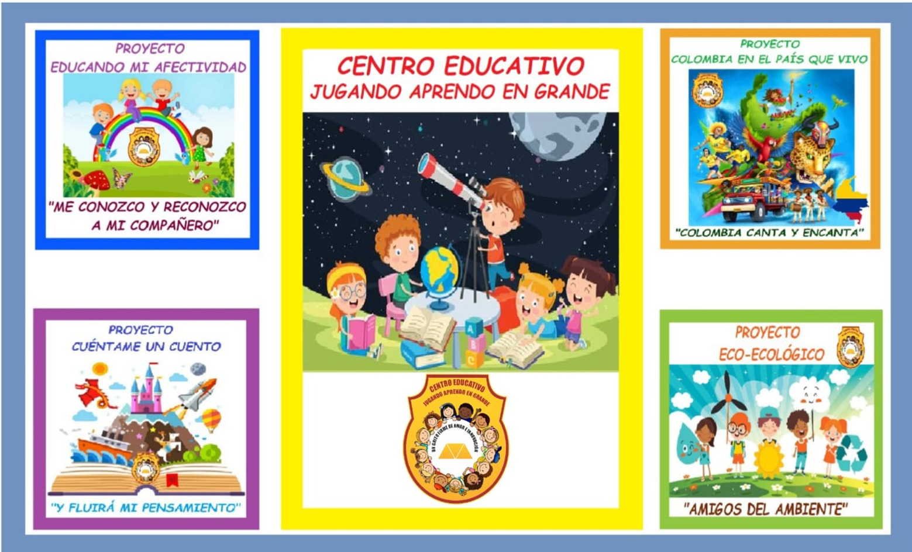
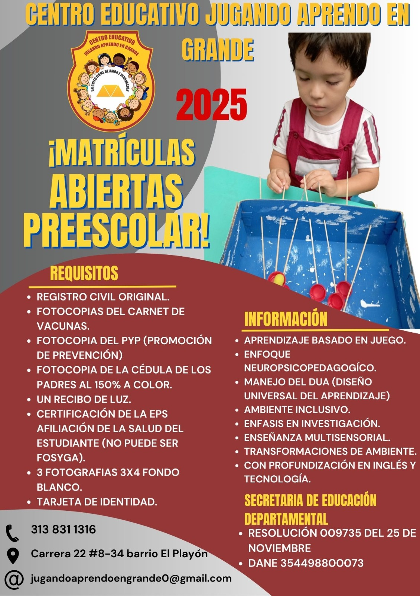

Lema: Un grito firme de amor e innovación
El Plan de Estudio de Preescolar del Centro Educativo Jugando Aprendo en Grande está basado en el Modelo Pedagógico Círculos Integrados de Desarrollo de Educación Preescolar (CIDEP). Este enfoque busca integrar de manera activa al centro educativo, al niño y a la familia dentro del proceso educativo, teniendo en cuenta el contexto y la cultura en la que se encuentran.
El CIDEP reconoce al niño como un explorador, mientras que el docente y los padres actúan como expedicionarios en el viaje del aprendizaje. La premisa fundamental de este enfoque es que el aprendizaje del niño se construye a través de la experiencia.
Por ello, se prioriza un proceso de enseñanza que fomente la participación activa, la reflexión y la construcción colectiva de conocimientos. Además, se asegura la flexibilidad en el proceso educativo, permitiendo que los niños desarrollen habilidades y aprendizajes de forma autónoma y colaborativa.
Entre las herramientas pedagógicas utilizadas se destacan:
Estos espacios están diseñados para fortalecer el aprendizaje a través de experiencias significativas que favorecen el desarrollo integral de los niños.
El modelo CIDEP propone cuatro proyectos de aula que deben ser desarrollados a lo largo del proceso educativo. Estos proyectos están alineados con las demandas actuales de la formación infantil, teniendo en cuenta los aspectos culturales y sociales relevantes para la actualidad.
Los proyectos son:
Estos proyectos están diseñados para contextualizar y mejorar los aprendizajes de los niños, adaptándolos a sus necesidades e intereses, siempre bajo los criterios de pertenencia y utilidad del conocimiento.
"Todo humano pasa por la infancia, si es bien orientado, feliz y sano, con CIDEP será fuerte."
- William Alvarado
Esta experiencia se fundamenta en la reflexión de María Montessori, quien sostuvo:
"El niño, con su enorme potencial físico e intelectual, es un milagro frente a nosotros. Este hecho debe ser transmitido a todos los padres, educadores y personas interesadas en niños, porque la educación desde el comienzo de la vida podría cambiar verdaderamente el presente y futuro de la sociedad. Debemos tener claro, eso sí, que el desarrollo del potencial humano no está determinado por nosotros. Solo podemos servir al desarrollo del niño, pues este se realiza en un espacio en el que hay leyes que rigen el funcionamiento de cada ser humano y cada desarrollo tiene que estar en armonía con todo el mundo que nos rodea y con todo el universo."
- María Montessori, 1912
Nuestros grados están divididos en:
Mantente al día con las últimas noticias de nuestro colegio.
Para más información, contáctanos a través del siguiente formulario o mediante los siguientes medios:
También puedes enviarnos un mensaje a través del formulario: